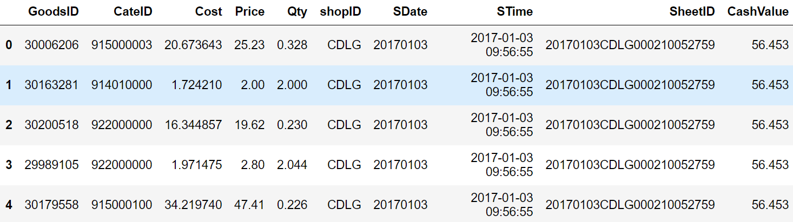
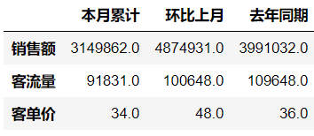
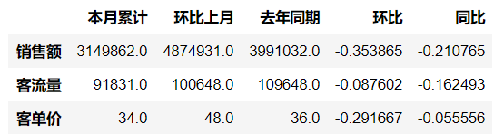
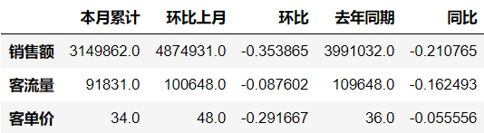
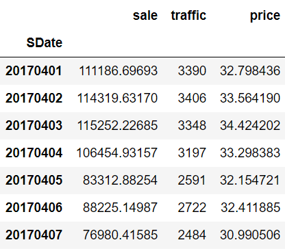
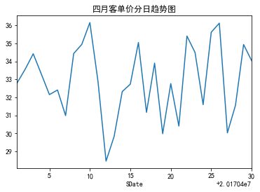
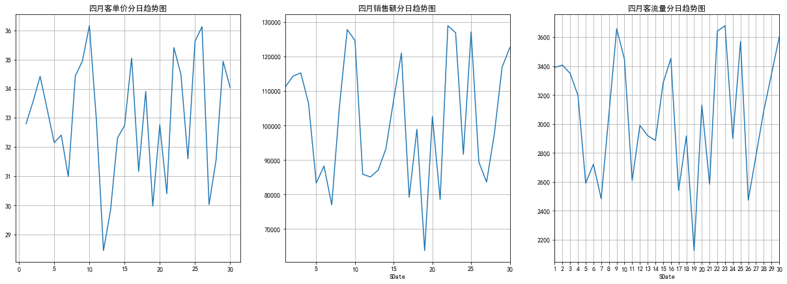

title: 超市月报表关键指标计算
date: 2020-04-12 18:28:45
要求：
题目说明：
业务背景：
计算逻辑说明：
我们要计算的是某一时间段内的各指标数据，那么首先需要把这一时间段的明细数据索引出来，然后再在这段时间范围内的基础上去计算各指标。
目前明细数据中已有的时间字段是SDate和STime,SDate是非时间格式，需要将该字段解析为时间格式，STime是时间格式，但是该字段是分秒粒度的，我们目前需要月维度的数据，所以需要将这两个字段中其中一个转化为月维度的数据，这里选择将SDate转化为月维度的数据。
有月维度数据以后，我们就可以通过让月等于你要计算的月份，比如让月份等于4，就是把4月的数据筛选出来，然后在筛选出来的数据上进行各指标求取。
销售额 = 售价 乘 销量 = [“Price”] 乘 [“Qty”]
客流量 = 订单量（客流量用订单量代替）= SheetID去重以后计数
客单价 = 销售额/客流量
%matplotlib inline #将matplotlib的图表直接嵌入到Notebook之中
import pandas as pd
import numpy as np
import matplotlib.pyplot as plt
from dateutil.parser import parse
plt.rcParams["font.sans-serif"]='SimHei'#解决中文乱码
plt.rcParams['axes.unicode_minus'] = False#解决负号无法正常显示的问题data_2017 = pd.read_csv(r"201701-201705.csv",parse_dates = ["STime"])
data_2017.head()
data_2016 = pd.read_csv(r"201601-201605.csv",parse_dates = ["STime"])删除重复数据
data_2016 = data_2016.drop_duplicates()
data_2017 = data_2017.drop_duplicates()
data_2017.shape(855620, 10)
data_2016["date"] = [parse(str(time)) for time in data_2016["SDate"]]
data_2017["date"] = [parse(str(time)) for time in data_2017["SDate"]]
data_2016["月份"] = [time.month for time in data_2016["date"]]
data_2017["月份"] = [time.month for time in data_2017["date"]]
data_2017["月份"].unique()
array([1, 4], dtype=int64)April_data = data_2017[data_2017["date"]>=parse("2017-04-01")]
# parser是根据字符串解析成datetimsale_sum = (April_data["Price"]*April_data["Qty"]).sum()
sale_sum3041195.2679000003
#四月累计客流用订单量代替
traffic_sum = April_data["SheetID"].drop_duplicates().count()
traffic_sum91831
#四月累计客单价
Customer_price = sale_sum/traffic_sum
Customer_price33.11730535331207
March_data = data_2017[(data_2017["date"]>=parse("2017-01-01"))&(data_2017["date"]<=parse("2017-01-31"))]
# 选择上个月的(1月)#一月累计销售额
sale_sum_1 = (March_data["Price"]*March_data["Qty"]).sum()
sale_sum_14674895.95622
#一月累计客流用订单量代替
traffic_sum_1 = March_data["SheetID"].drop_duplicates().count()
traffic_sum_1100648
#一月累计客单价
Customer_price_1 = sale_sum_1/traffic_sum_1
Customer_price_146.44797667335665
last_April = data_2016[(data_2016["date"]>=parse("2016-04-01"))]#去年同期累计销售额
sale_sum_last = (last_April["Price"]*last_April["Qty"]).sum()
#去年同期累计客流用订单量代替
traffic_sum_last = last_April["SheetID"].drop_duplicates().count()
#去年同期客单价
Customer_price_last = sale_sum_last/traffic_sum_last
Customer_price_last35.27396908333941
def get_month_data(data):
sale = (data["Price"]*data["Qty"]).sum()
traffic = data["SheetID"].drop_duplicates().count()
price = sale/traffic
return (sale,traffic,price)get_month_data(last_April)(3991031.93926, 109648, 36.398584007551435)
get_month_data(March_data)(4874930.787089999, 100648, 48.43544617965582)
data = {"本月累计":[round(sale_sum),round(traffic_sum),round(Customer_price)],
"环比上月":[round(sale_sum_1),round(traffic_sum_1),round(Customer_price_1)],
"去年同期":[round(sale_sum_last),round(traffic_sum_last),round(Customer_price_last)]}
columns = ["本月累计","环比上月","去年同期"]
index = ["销售额","客流量","客单价"]
month_report = pd.DataFrame(data,index = index,columns = columns)
month_report
month_report["环比"] = (month_report["本月累计"]/month_report["环比上月"] - 1)
month_report["同比"] = (month_report["本月累计"]/month_report["去年同期"] - 1)
month_report
month_report[["本月累计","环比上月","环比","去年同期","同比"]]
题目说明：
业务背景：
通过第一节我们已经判断出了17年4月各指标发展情况的好坏，作为数据分析师，不管业务出现好或者坏，都要去追寻为什么？在追寻为什么的时候，就可以结合业务具体去看是因为哪方面的变化，引起了某一段时间内整体指标的变化。
这一节选择时间维度去看一下17年4月不同时间维度各指标的变化情况。
计算逻辑说明：
data_2017 = pd.read_csv(r"201701-201705.csv",parse_dates = ["STime"])
data_2017 = data_2017.drop_duplicates()
#将数值型日期作为index
data_2017=data_2017.set_index("SDate",True)
data_2017.head()添加两个字段，分别是月份和日期。可以使用.unique()来查看数据包含多少月份，日期分别是哪些天。 要计算2017年4月每日的销售额、客流量、客单价，则先选取四月的数据。
data_2017["month"] = [time.month for time in data_2017["STime"]]
data_2017["day"] = [time.day for time in data_2017["STime"]]计算2017年M月每日的销售额、客流量、客单价，并用图表形式展现 传入M月份
def get_day_data(M,data): # 传入yue
data=data[data["month"]==M]
sale=(data["Price"]*data["Qty"]).groupby(by='SDate').sum() #当月每天的销售额
#sale = (data["Price"]*data["Qty"]).sum() #每笔订单的销售额
traffic =data["SheetID"].drop_duplicates().groupby("SDate").count() #每日客流量
price = sale/traffic # 返回的是series
return pd.DataFrame({"sale":sale,"traffic":traffic,"price":price})
get_day_data(4,data_2017)
april=get_day_data(4,data_2017)
grouped_price=april.price
grouped_price.plot(title = "四月客单价分日趋势图")
现在对可视化的图进行一些修改，首先index日期包含年月日，过于长 我这里只选一个月份，所以把index缩短成日就行。
april.index
april=april.set_index( april.index%201704 )
作业题：
题目说明：
业务背景：
计算逻辑说明：